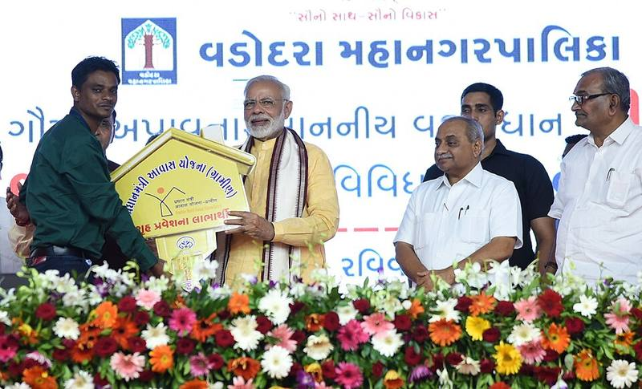

मोदी सरकार की आंध्र प्रदेश को 3 लाख पक्के आवासों की ऐतिहासिक सौगात; श्री शिवराज सिंह चौहान और श्री चंद्रबाबू नायडू ने बुर्रीपालेम से भरी विकास की हुंकार - PIB

प्रधानमंत्री आवास योजना — लाभार्थियों को घर की चाबियां सौंपते प्रधानमंत्री
04 Oct 2026, 03:17 PM
मोदी सरकार की आंध्र प्रदेश को 3 लाख पक्के आवासों की ऐतिहासिक सौगात; श्री शिवराज सिंह चौहान और श्री चंद्रबाबू नायडू ने बुर्रीपालेम से भरी विकास की हुंकार PIB